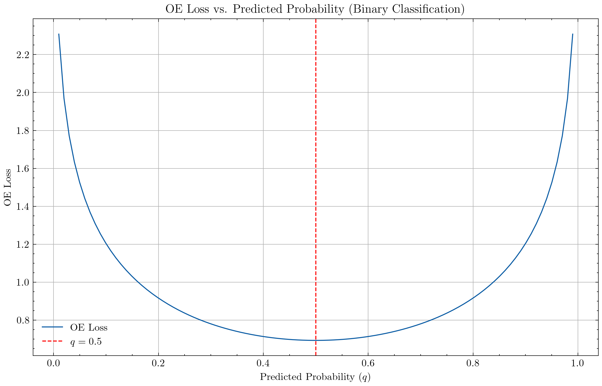

Outlier Exposure#
Outlier Exposure（OE） は異常検出や外れ値に対するロバスト性向上のために提案された手法である．OEでは，モデルの学習時に通常のデータ（In-distribution Data）だけでなく，意図的に分布外データ（Out-distribution data）をモデルに晒すことで，モデルの汎化性能を改善させることを意図している．具体的に，モデルが外れ値データ \(x_{out}\) に対して極めて低い確率を与えるように次の損失に基づいて学習する．
\[
\mathcal{L}_{OE} = \mathcal{L}_{CE}(p(y|x_{in}), y) + \lambda \mathcal{L}_{CE}(p(y|x_{out}), \mathcal{U})
\]
ここで，\(\mathcal{L}_{CE}\) は交差エントロピー誤差関数，\(p(y|x_{in})\) は通常のデータに対する予測確率分布，\(p(y|x_{out})\) は分布外データに対する予測確率分布，\(\lambda\) はOEと通常の分類誤差との重み付け，\(\mathcal{U}\) は一様分布を表す．この式からもわかる様に分布外データの分類結果が全クラスにわたって等確率となるように学習する関数である．
import numpy as np
import matplotlib.pyplot as plt
import scienceplots
plt.style.use('science')
plt.rcParams['figure.dpi'] = 300
plt.rcParams['savefig.dpi'] = 300
def oe_loss(q, C):
uniform_dist = 1.0 / C
return - (uniform_dist * np.log(q) + uniform_dist * np.log(1 - q))
q_values = np.linspace(0.01, 0.99, 100)
loss_values = [oe_loss(q, 2) for q in q_values]
plt.figure(figsize=(10, 6))
plt.plot(q_values, loss_values, label='OE Loss')
plt.xlabel(r'Predicted Probability ($q$)')
plt.ylabel('OE Loss')
plt.title('OE Loss vs. Predicted Probability (Binary Classification)')
plt.axvline(x=0.5, color='red', linestyle='--', label=r'$q = 0.5$')
plt.legend()
plt.grid(True)
plt.show()
